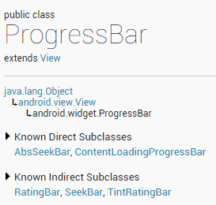
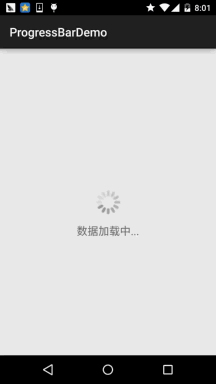

本节のイントロダクション：
本节では、Android基本UIコンポーネントのProgressBar（プログレスバー）を紹介します。ProgressBarの応用シーンは多く、例えばユーザーがログインする時、バックグラウンドでリクエストを送信し、サーバーからの返信を待つ場合、この時にプログレスバーが使われます。また、比較の時間のかかる操作を行う場合、長い時間待つ必要があります。この時にヒントがなければ、ユーザーはプログラムがクラッシュしたか、スマホがフリーズしたと思うかもしれません。これではユーザーエクスペリエンスが大幅に低下します。そのため、時間のかかる操作が必要な場所にプログレスバーを追加し、ユーザーに現在のプログラムが実行中であることを知らせ、現在のタスクの実行進捗を直感的に伝えることができます！プログレスバーを使うと、このような便利さが得られます！では、本节の内容の説明を始めましょう〜そうそう、ProgressBar公式APIドキュメント：ProgressBar
1.よく使う属性の説明と基本インスタンス
公式ドキュメントから、このようなクラス関係図が確認できます：

ProgressBarはViewクラスを継承しており、直接のサブクラスにはAbsSeekBarとContentLoadingProgressBarがあります。そのうちAbsSeekBarのサブクラスにはSeekBarとRatingBarがあり、この2つもProgressBarに基づいて実装されていることがわかります。
よく使う属性の詳細説明：
- android:max：プログレスバーの最大値
- android:progress：プログレスバーの完了済み進捗値
- android:progressDrawable：トラックに対応するDrawableオブジェクトを設定
- android:indeterminate：trueに設定すると、プログレスバーは進捗を正確に表示しません
- android:indeterminateDrawable：進捗を表示しないプログレスバーのDrawableオブジェクトを設定
- android:indeterminateDuration：進捗を正確に表示しない持続時間を設定
- android:secondaryProgress：セカンダリプログレスバー。動画再生のように、一方は現在の再生進捗、もう一方はバッファ進捗を表します。前者はprogress属性で設定します！
対応して、Javaでは以下のメソッドを呼び出すことができます：
- getMax（）：このプログレスバーの範囲の上限を返します
- getProgress（）：進捗を返します
- getSecondaryProgress（）：セカンダリ進捗を返します
- incrementProgressBy（int diff）：増加する進捗を指定します
- isIndeterminate（）：プログレスバーが不確定モードかどうかを示します
- setIndeterminate（boolean indeterminate）：不確定モードを設定します
次に、システムが提供するデフォルトのプログレスバーの例を見てみましょう！
システムデフォルトのプログレスバー使用例：
実行結果図：

実装レイアウトコード：
<LinearLayout xmlns:android="http://schemas.android.com/apk/res/android"
xmlns:tools="http://schemas.android.com/tools"
android:layout_width="match_parent"
android:layout_height="match_parent"
android:orientation="vertical"
tools:context=".MainActivity">
<!-- 系统提供的圆形进度条,依次是大中小 -->
<ProgressBar
style="@android:style/Widget.ProgressBar.Small"
android:layout_width="wrap_content"
android:layout_height="wrap_content" />
<ProgressBar
android:layout_width="wrap_content"
android:layout_height="wrap_content" />
<ProgressBar
style="@android:style/Widget.ProgressBar.Large"
android:layout_width="wrap_content"
android:layout_height="wrap_content" />
<!--系统提供的水平进度条-->
<ProgressBar
style="@android:style/Widget.ProgressBar.Horizontal"
android:layout_width="match_parent"
android:layout_height="wrap_content"
android:max="100"
android:progress="18" />
<ProgressBar
style="@android:style/Widget.ProgressBar.Horizontal"
android:layout_width="match_parent"
android:layout_height="wrap_content"
android:layout_marginTop="10dp"
android:indeterminate="true" />
</LinearLayout>
まあ、2番目以外は見られたものじゃないですね...システムが提供するものは、どうあがいても私たちのニーズを満たせません！次に、実際の開発でのプログレスバーの扱い方を説明します！
2.アニメーションを使って円形プログレスバーを置き換える
最初の方法は、一連の連続画像を使ってフレームアニメーションを形成し、進捗画像が必要な時にアニメーションを表示し、不要な時にアニメーションを非表示にするだけです！このアニメーションは、通常AnimationDrawableを使って実装します！では、AnimationDrawableファイルを定義しましょう：
PS：使用する画像素材：プログレスバー画像素材パック.zip
実行結果図：

resディレクトリの下にanimフォルダを新規作成し、amin_pgbar.xmlのリソースファイルを作成します：
<?xml version="1.0" encoding="utf-8"?>
<animation-list xmlns:android="http://schemas.android.com/apk/res/android"
android:oneshot="false" >
<item
android:drawable="@drawable/loading_01"
android:duration="200"/>
<item
android:drawable="@drawable/loading_02"
android:duration="200"/>
<item
android:drawable="@drawable/loading_03"
android:duration="200"/>
<item
android:drawable="@drawable/loading_04"
android:duration="200"/>
<item
android:drawable="@drawable/loading_05"
android:duration="200"/>
<item
android:drawable="@drawable/loading_06"
android:duration="200"/>
<item
android:drawable="@drawable/loading_07"
android:duration="200"/>
<item
android:drawable="@drawable/loading_08"
android:duration="200"/>
<item
android:drawable="@drawable/loading_09"
android:duration="200"/>
<item
android:drawable="@drawable/loading_10"
android:duration="200"/>
<item
android:drawable="@drawable/loading_11"
android:duration="200"/>
<item
android:drawable="@drawable/loading_12"
android:duration="200"/>
</animation-list>
次にレイアウトファイルを書きます。中にはImageViewが1つだけあればよく、プログレスバーを表示するために、srcを上記のdrawableリソースに設定するだけです！最後にMainActivity.javaへ。
public class MainActivity extends AppCompatActivity {
private ImageView img_pgbar;
private AnimationDrawable ad;
@Override
protected void onCreate(Bundle savedInstanceState) {
super.onCreate(savedInstanceState);
setContentView(R.layout.activity_main);
img_pgbar = (ImageView) findViewById(R.id.img_pgbar);
ad = (AnimationDrawable) img_pgbar.getDrawable();
img_pgbar.postDelayed(new Runnable() {
@Override
public void run() {
ad.start();
}
}, 100);
}
}
ここではアニメーションの起動方法を書いただけなので、残りは自分でやってくださいね〜プログレスバーを表示する必要がある時はImageViewを表示し、不要な時は非表示にするだけです！また、実はProgressBar自体にindeterminateDrawableがあり、このパラメータを上記のアニメーションリソースに設定するだけでよいのですが、プログレスバーのパターンのサイズは直接変更できず、Javaコードでの変更が必要です。幅と高さを設定し、その幅と高さが大きすぎる場合、複数のプログレスバーが見えることになります...自分で权衡してください〜
3.カスタム円形プログレスバー
2を見終わったら、きっと「うわっ、こんなの酷い、アニメで人を騙すのか」とツッコミたくなるでしょう。ははは、実際の開発ではだいたいこんなものです。もちろん、上記の方法は進捗を表示する必要がない場合にのみ適用でき、進捗を表示する必要がある場合には役に立ちません。では、次にネット上の簡単なカスタム円形プログレスバーを見てみましょう！コードは比較のシンプルで理解しやすく、興味があれば見たり、関連する拡張を行ったりできます〜
実行結果図：

実装コード：
カスタムViewクラス：
/**
* Created by Jay on 2015/8/5 0005.
*/
public class CirclePgBar extends View {
private Paint mBackPaint;
private Paint mFrontPaint;
private Paint mTextPaint;
private float mStrokeWidth = 50;
private float mHalfStrokeWidth = mStrokeWidth / 2;
private float mRadius = 200;
private RectF mRect;
private int mProgress = 0;
//目标值，想改多少就改多少
private int mTargetProgress = 90;
private int mMax = 100;
private int mWidth;
private int mHeight;
public CirclePgBar(Context context) {
super(context);
init();
}
public CirclePgBar(Context context, AttributeSet attrs) {
super(context, attrs);
init();
}
public CirclePgBar(Context context, AttributeSet attrs, int defStyleAttr) {
super(context, attrs, defStyleAttr);
init();
}
//完成相关参数初始化
private void init() {
mBackPaint = new Paint();
mBackPaint.setColor(Color.WHITE);
mBackPaint.setAntiAlias(true);
mBackPaint.setStyle(Paint.Style.STROKE);
mBackPaint.setStrokeWidth(mStrokeWidth);
mFrontPaint = new Paint();
mFrontPaint.setColor(Color.GREEN);
mFrontPaint.setAntiAlias(true);
mFrontPaint.setStyle(Paint.Style.STROKE);
mFrontPaint.setStrokeWidth(mStrokeWidth);
mTextPaint = new Paint();
mTextPaint.setColor(Color.GREEN);
mTextPaint.setAntiAlias(true);
mTextPaint.setTextSize(80);
mTextPaint.setTextAlign(Paint.Align.CENTER);
}
//重写测量大小的onMeasure方法和绘制View的核心方法onDraw()
@Override
protected void onMeasure(int widthMeasureSpec, int heightMeasureSpec) {
super.onMeasure(widthMeasureSpec, heightMeasureSpec);
mWidth = getRealSize(widthMeasureSpec);
mHeight = getRealSize(heightMeasureSpec);
setMeasuredDimension(mWidth, mHeight);
}
@Override
protected void onDraw(Canvas canvas) {
initRect();
float angle = mProgress / (float) mMax * 360;
canvas.drawCircle(mWidth / 2, mHeight / 2, mRadius, mBackPaint);
canvas.drawArc(mRect, -90, angle, false, mFrontPaint);
canvas.drawText(mProgress + "%", mWidth / 2 + mHalfStrokeWidth, mHeight / 2 + mHalfStrokeWidth, mTextPaint);
if (mProgress < mTargetProgress) {
mProgress += 1;
invalidate();
}
}
public int getRealSize(int measureSpec) {
int result = 1;
int mode = MeasureSpec.getMode(measureSpec);
int size = MeasureSpec.getSize(measureSpec);
if (mode == MeasureSpec.AT_MOST || mode == MeasureSpec.UNSPECIFIED) {
//自己计算
result = (int) (mRadius * 2 + mStrokeWidth);
} else {
result = size;
}
return result;
}
private void initRect() {
if (mRect == null) {
mRect = new RectF();
int viewSize = (int) (mRadius * 2);
int left = (mWidth - viewSize) / 2;
int top = (mHeight - viewSize) / 2;
int right = left + viewSize;
int bottom = top + viewSize;
mRect.set(left, top, right, bottom);
}
}
}
そしてレイアウトファイルに追加します：
<com.jay.progressbardemo.CirclePgBar
android:layout_width="match_parent"
android:layout_height="match_parent"/>
これだけで簡単です〜
本节のまとめ：
本節では、Androidのよく使うコンポーネントであるProgressBarを紹介し、基本的な使い方と、実際の開発におけるプログレスバーの2つの実装方法について説明しました。2番目のカスタムプログレスバーは自分で改良して、実際の開発に使うことができます！では、本節はここまでです。ありがとうございました〜